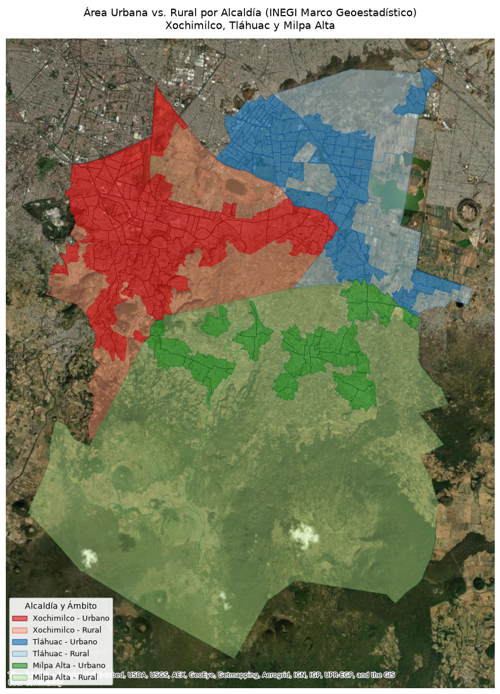

Código
import geopandas as gpd
import matplotlib.patches as mpatches
import matplotlib.pyplot as plt
# 1. Cargar capas de INEGI
MUNICIPIOS = ['009', '011', '013']
NOMBRES_MUN = {'009': 'Milpa Alta', '011': 'Tláhuac', '013': 'Xochimilco'}
ageb_urb = gpd.read_file("../data/ageb_urbano/ageb_urbano.shp")
ageb_rur = gpd.read_file("../data/ageb_rural/ageb_rural.shp")
# 2. Filtrar las 3 alcaldías y proyectar a Web Mercator (EPSG:3857)
urb_sur = ageb_urb[ageb_urb['CVE_MUN'].isin(MUNICIPIOS)].to_crs(epsg=3857).copy()
rur_sur = ageb_rur[ageb_rur['CVE_MUN'].isin(MUNICIPIOS)].to_crs(epsg=3857).copy()
# 3. Asignar etiquetas legibles de alcaldía y tipo
urb_sur['Alcaldia'] = urb_sur['CVE_MUN'].map(NOMBRES_MUN)
urb_sur['Tipo'] = 'Urbano'
urb_sur['Categoria'] = urb_sur['Alcaldia'] + " - Urbano"
rur_sur['Alcaldia'] = rur_sur['CVE_MUN'].map(NOMBRES_MUN)
rur_sur['Tipo'] = 'Rural'
rur_sur['Categoria'] = rur_sur['Alcaldia'] + " - Rural"
# 4. Definición de paleta (Color de relleno, color de borde)
# Se eligen tonos contrastantes pero coherentes por zona
ESTILOS = {
'Xochimilco - Urbano': {'fill': '#e41a1c', 'edge': '#7f0000', 'alpha': 0.65}, # Rojo intenso
'Xochimilco - Rural': {'fill': '#fc9272', 'edge': '#de2d26', 'alpha': 0.45}, # Salmón / terracota
'Tláhuac - Urbano': {'fill': '#1f78b4', 'edge': '#084594', 'alpha': 0.65}, # Azul cobalto
'Tláhuac - Rural': {'fill': '#a6cee3', 'edge': '#2171b5', 'alpha': 0.45}, # Azul cielo
'Milpa Alta - Urbano': {'fill': '#33a02c', 'edge': '#00441b', 'alpha': 0.65}, # Verde bosque
'Milpa Alta - Rural': {'fill': '#b2df8a', 'edge': '#238b45', 'alpha': 0.40}, # Verde pasto
}
# 5. Graficar
fig, ax = plt.subplots(figsize=(13, 12))
# Pintar capas rurales primero (fondo) y luego urbanas (frente)
for cat, estilo in ESTILOS.items():
if "Rural" in cat:
sub_gdf = rur_sur[rur_sur['Categoria'] == cat]
sub_gdf.plot(
ax=ax,
facecolor=estilo['fill'],
edgecolor=estilo['edge'],
linewidth=0.7,
alpha=estilo['alpha']
)
elif "Urbano" in cat:
sub_gdf = urb_sur[urb_sur['Categoria'] == cat]
sub_gdf.plot(
ax=ax,
facecolor=estilo['fill'],
edgecolor=estilo['edge'],
linewidth=0.5,
alpha=estilo['alpha']
)
# 6. Añadir mapa base satelital
try:
import contextily as ctx
ctx.add_basemap(ax, source="Esri.WorldImagery")
except Exception as e:
print(f"Aviso mapa base: {e}")
# 7. Construir leyenda personalizada
parches_leyenda = [
mpatches.Patch(
facecolor=estilo['fill'],
edgecolor=estilo['edge'],
label=cat,
alpha=estilo['alpha']
)
for cat, estilo in ESTILOS.items()
]
ax.legend(
handles=parches_leyenda,
title="Alcaldía y Ámbito",
loc="lower left",
frameon=True,
facecolor="white",
framealpha=0.9,
fontsize=9,
title_fontsize=10
)
ax.set_title(
"Área Urbana vs. Rural por Alcaldía (INEGI Marco Geoestadístico)\nXochimilco, Tláhuac y Milpa Alta",
fontsize=13,
pad=12
)
ax.set_axis_off()
plt.tight_layout()
plt.show()